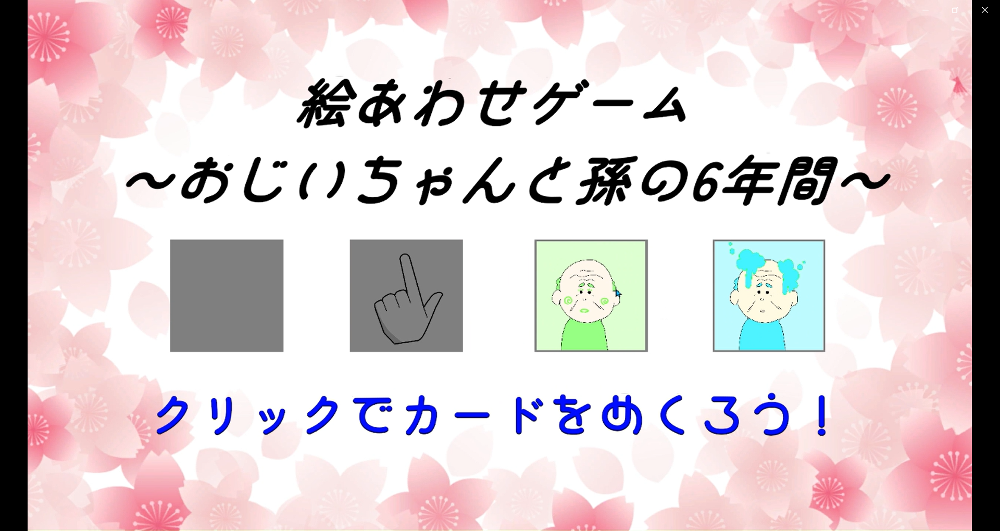
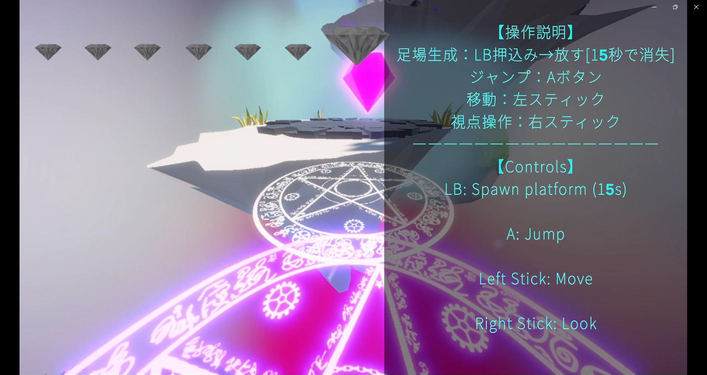
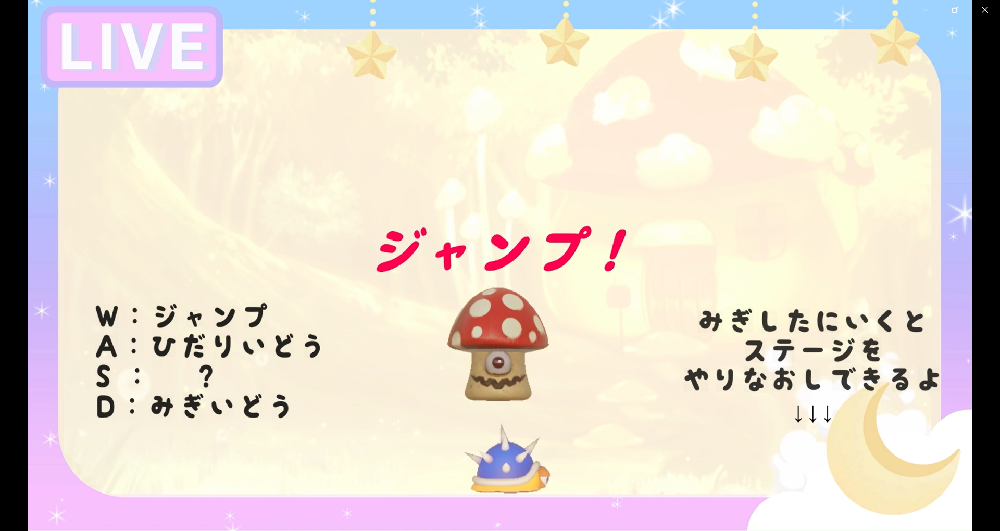
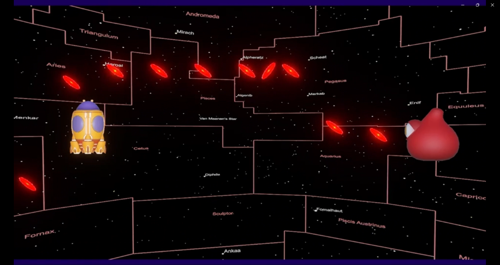
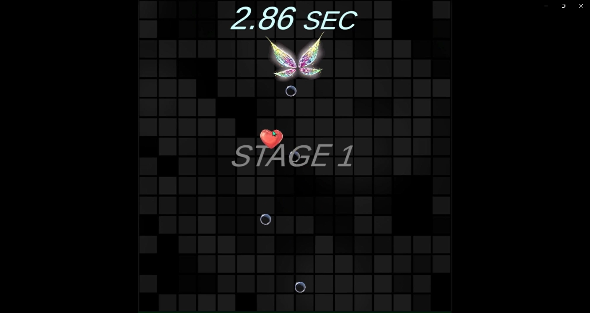
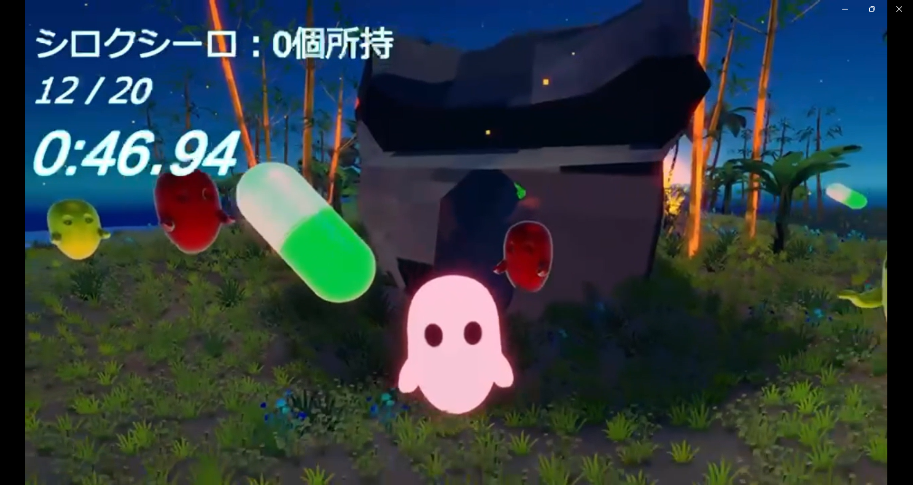
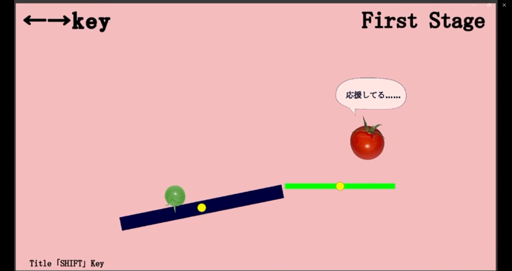

GAME CREATION / RESEARCH
制作試行錯誤ノート
しろまるの
制作試行錯誤ノート

プロフィール
名前：しろまる
専門学生のプランナー志望です。
1年半で15作品を制作。
アイデアを考え、ゲームとして形にし、試行錯誤を重ねながら制作してきました。
目指すプランナー像：
プレイヤーに時間を忘れて楽しめる体験を届けたいです。
企画・ゲームデザイン：アイデア出し、ルール設計、遊び心地の調整
企画書・資料作成：PowerPoint
ゲーム制作：Unity
音楽制作：Medly、GarageBand
画像制作：ibisPaint
3Dモデル制作：Maya（Sky HITの杖）
投稿先：unityroom、itch.io（1作品）
授業で学習：Photoshop（基礎操作）
掲載作品はすべて一人で制作しています。
企画のアイデア出しや整理、プログラミングにChatGPTを活用しています。
UIは自分で制作するか、素材を使用しています。
すべてブラウザ上で遊べます！
全作品プレイ時間10分以内！
👑 特に見てほしい代表作
PICKUP #01
労うトマト
ジャンル：バランスゲーム
制作期間：1か月半
Unity / C# / ibisPaint / GarageBand
担当：企画・制作・実装
目指した体験：
落とすと悔しい。
バランスをとること自体が楽しい体験。
企画書は横にスクロールできます。画像を押すと大きく表示します。
▶ unityroomで遊ぶ
✎ テストプレイからの改善
シーソーがプレイヤーに対して軽く、落ちやすかったため、重さのバランスを調整しました。
Playerキャラが簡単に落ちなくなり、バランスを調整するというゲームの核が際立ちました。
📌 残っているバグ・今後の研究メモ
方向転換でプレイヤーが滑って見えるため、回転速度を合わせたいと考えています。
PICKUP #02
SPACE BALL
ジャンル：弾避けアクションゲーム
制作期間：2週間
Unity / C# / Medly
担当：企画・制作・実装
企画のきっかけ：
曲を最後まで聴いてほしい。
その思いから、曲が終わるまで玉を避けるゲームを企画しました。
企画書を押すと大きく表示します。
 企画書
企画書
企画書の構成・文章整理にChatGPTを活用。企画内容とゲーム仕様は自身で検討・調整。
▶ unityroomで遊ぶ
✎ リスクとリターン
避けられたときは、自分で操作して切り抜けた手応えがあります。避けられなかったときは、操作がうまくいかなかったと感じる体験を目指しました。
✎ テストプレイからの改善
玉を円形から楕円形に変更しました。
回転しながら飛んでくる玉は、縦向きになったときに弾の間を通りやすくなると考えました。
変更後は避けやすくなり、狙った遊びやすさにつながりました。
📌 残っている課題・今後の研究メモ
音楽を目立たせるため、当たったときは音楽を止める演出にしました。
音楽を邪魔せずに衝突を伝えるエフェクトも加えると、より分かりやすくできそうです。
3ステージ構成ですが、ステージ3がステージ2より簡単に感じられます。
曲の盛り上がりに合わせて難しくする狙いでしたが、難易度の上昇が緩やかになりました。
曲の展開と障害物の量や速さを合わせ、意図した難易度カーブになるよう調整したいです。
過去1年半の制作実績
掲載作品（13作品）
01 めざせ3776富士ジャンプ

ジャンル：ワンクリックジャンプゲーム
制作期間：2週間半
目指した体験：
ワンクリックで遊べて、失敗しても成功しても楽しめる体験。
▶ unityroomで遊ぶ
02 絵あわせゲーム ～おじいちゃんと孫の6年間～

ジャンル：絵あわせゲーム
制作期間：1週間
目指した体験：
神経衰弱にタイミングアクションを組み合わせた体験。
▶ unityroomで遊ぶ
03 Memory Breakdown

ジャンル：パズルアクションゲーム
制作期間：1か月
目指した体験：
3D空間で神経衰弱を遊び、「忘れてしまうこと」をエネミーとして表現。
▶ unityroomで遊ぶ
04 MAGIC_TILE

ジャンル：空中移動アクションゲーム
制作期間：2か月
目指した体験：
空中を移動するときのハラハラ感。
▶ unityroomで遊ぶ
05 末期Dr.オフィーリア

ジャンル：プッシャーゲーム
制作期間：2週間
目指した体験：
コイン落としを楽しくするため、落下先にエネミーを配置。
▶ unityroomで遊ぶ
06 ライブ配信：３年付き合った彼氏に振られたけど 友達が突撃させてくれるらしい まじありがとう

ジャンル：突撃アクションゲーム
制作期間：5日
目指した体験：
移動だけでエネミーを撃破できる楽しさ。
▶ unityroomで遊ぶ
07 SPACE BALL

ジャンル：弾避けアクションゲーム
制作期間：2週間
目指した体験：
曲を最後まで聴いてもらえるよう、曲が終わるまで玉を避けるゲームにしました。
▶ unityroomで遊ぶ
08 Master of Absurdity（おためし版）

ジャンル：理不尽ステージアクションゲーム
制作期間：3週間
目指した体験：
予想できない動きをするステージで、理不尽さを楽しむ体験。
▶ unityroomで遊ぶ
09 Bubble Hole

ジャンル：弾避けアクションゲーム
制作期間：2週間
目指した体験：
きれいな弾幕を避ける背徳感。
▶ unityroomで遊ぶ
10 sky HIT

ジャンル：スピードタッチゲーム
制作期間：1週間
目指した体験：
当てるたびに速くなる緊張感。「あともう一個だった」という悔しさから、もう一度遊びたくなる体験。
▶ unityroomで遊ぶ
11 シロクシーロ

ジャンル：状態変化エネミー捕獲ゲーム
制作期間：1週間
目指した体験：
素早くタッチしてゴーストを捕獲する楽しさ。
▶ unityroomで遊ぶ
12 労うトマト

ジャンル：バランスゲーム
制作期間：1か月半
目指した体験：
落とすと悔しい。バランスをとること自体が楽しい体験。
▶ unityroomで遊ぶ
13 Change Your Ranking

ジャンル：チェンジランキングカーレースゲーム
制作期間：1週間
目指した体験：
最後まで順位が予測できない、運試しのような体験。
企画：
学校の先生の原案をもとに、順位に関係なく数字に当たるルールへ変更し、順位が入れ替わる機会を増やしました。
▶ itch.ioで遊ぶ
ボタン制作例
未掲載作品で使用したボタンをIllustratorで制作。ゲーム画面のスクリーンショットから紹介します。